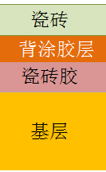

介绍
瓷砖胶虽然叫胶，但实际上其主要成分没有胶水成分，而是水泥中添加了纤维素，乳胶粉等材料，只要正规厂家均可放心使用。 薄贴法-瓷砖胶主要用于玻化砖及地砖上墙等普通水泥砂浆粘结强度不满足要求时，替代水泥砂浆的作用，既可以单独使用也可以与瓷砖背胶配合使用，但不应与水泥砂浆混合使用，否则降低瓷砖背胶的强度。 请留意与瓷砖背涂胶的区别（一字之差），瓷砖背涂胶才是胶水，要留意环保性。很多人把瓷砖胶叫成瓷砖背胶。
瓷砖胶主要品牌
德高 马贝 巴斯夫 裕川 盾石干粉 赛力特 波士胶 百得
韦伯 西卡 雨虹 雷帝 能高 湘彩 立邦
瓷砖胶薄贴铺贴方案
薄贴法最佳方案

薄贴法次选方案
因为瓷砖胶只是水泥增强型，本质还是水泥，而玻化砖瓷化度非常高，导致瓷砖胶还是很难渗透，所以还是有工地出现使用了瓷砖胶瓷砖还是脱落的情况，但瓷砖胶与墙体基层连接完好无损，这就说明瓷砖背胶再与墙体连接时非常牢固但依然没有拉住瓷砖，而瓷砖背涂胶恰恰能够解决瓷砖与瓷砖胶之间的连接。
如果预算有限，次选方案也一般没有问题，但不能确保。
瓷砖背涂胶选购
瓷砖背涂胶为刷在瓷砖背后的一层胶水，用于增加瓷砖与砂浆或瓷砖胶的连接，所以瓷砖背胶并不像瓷砖胶那样单独使用，而是需要与水泥砂浆或者瓷砖胶配合使用。
瓷砖背涂胶就是胶水，需要正规厂家才能保证环保及粘结力。
瓷砖背胶主要品牌
德高
立邦
固来
马贝
瓷砖背涂胶铺贴方案
薄贴法最佳方案
薄贴法次选方案
因为瓷砖胶只是水泥增强型，本质还是水泥，而玻化砖瓷化度非常高，导致瓷砖胶还是很难渗透，所以还是有工地出现使用了瓷砖胶瓷砖还是脱落的情况，但瓷砖胶与墙体基层连接完好无损，这就说明瓷砖背胶再与墙体连接时非常牢固但依然没有拉住瓷砖，而瓷砖背涂胶恰恰能够解决瓷砖与瓷砖胶之间的连接。
如果预算有限，次选方案也一般没有问题，尤其是外资品牌更有保障。
背涂胶品牌较少，很多大品牌对自己背胶产品有信心，并没有介入背涂胶领域。